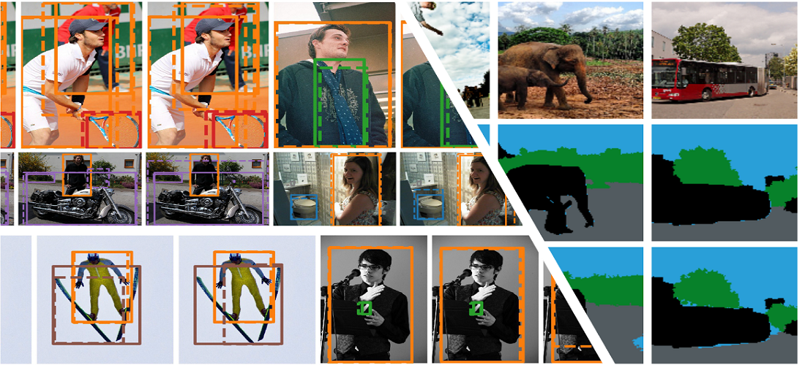
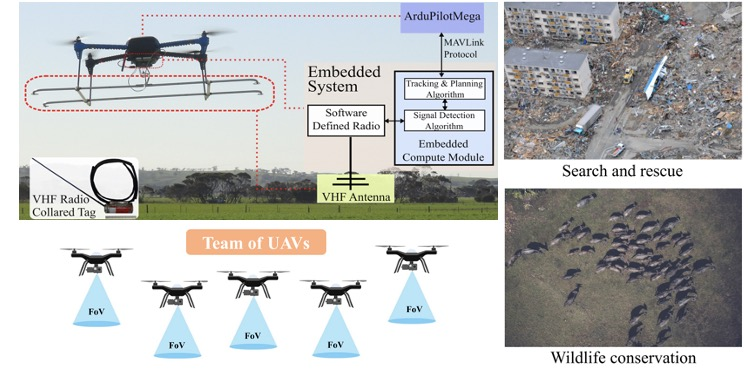
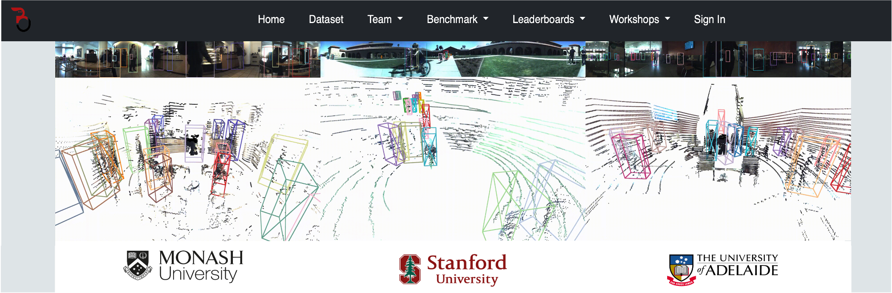
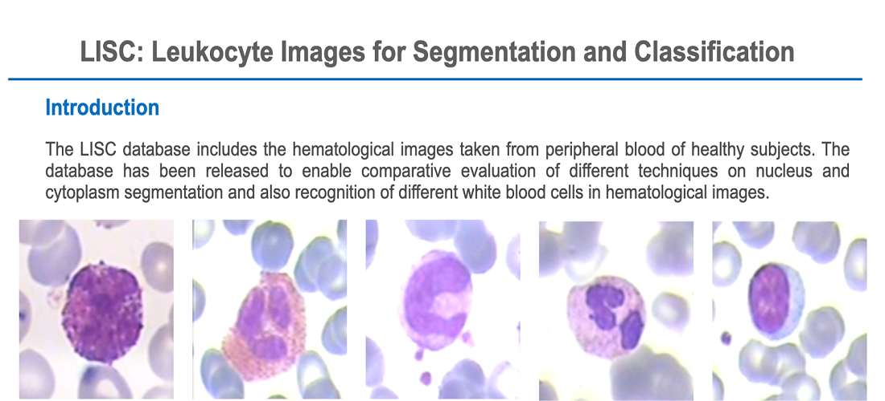

VISION & LEARNING FOR AUTONOMOUS AI LAB
Introduction
This section contains some information about our lab's active research projects, our public datasets and benchmarks. Our research mainly focuses on perception, forecasting, and navigation/planning.
Active Research Topics
Basic Vision Tasks (Perception)

This project focuses on different basic scene understanding computer vision tasks including, but not limited to, object detection, segmentation (instance, semantic/ panoptic) and depth estimation & completion from image/video/point cloud sequences using supervised, semi-supervised, few-shot and self-supervised learning techniques.
Relevant publications:
-
Unsupervised domain adaptation: Energy-based Self-Training and Normalization for Unsupervised Domain
Adaptation, ICCV 2023
- Image Classification - Semi-supervised: ProtoCon: Pseudo-label Refinement via Online Clustering and Prototypical Consistency for Efficient Semi-supervised Learning, CVPR 2023
- Image Classification - Semi-supervised: LAVA: Label-efficient Visual Learning and Adaptation, WACV 2023
- Object Detection - Weak supervised: Knowledge Combination to Learn Rotated Detection Without Rotated Annotation, CVPR 2023
- Object Detection: Learn to predict sets using feed-forward neural networks, TPAMI 2021
- Object Detection: Generalized Intersection over Union: A Metric and A Loss for Bounding Box Regression, CVPR 2019
- Semantic Segmentation - Unsupervised: Unsupervised Image Segmentation by Mutual Information Maximization and Adversarial Regularization, RA-L & IROS 2021
- Optical Flow: GMFlow: Learning Optical Flow via Global Matching, CVPR 2022
- Flow, Stereo & Depth: Unifying Flow, Stereo and Depth Estimation, TPAMI 2023
- Video Segmentation - Meta learning: Meta Learning with Differentiable Closed-form Solver for Fast Video Object Segmentation, IROS 2020
- Depth Completion: TopNet: Structural Point Cloud Decoder, CVPR 2019
- Metric & Evaluation: How trustworthy are the existing performance evaluations for basic vision tasks?, TPAMI 2023
Multi-Object Tracking (Perception)

Visually discriminating the identity of multiple (similar looking) objects in a scene and creating individual tracks of their movements over time, namely multi-object tracking (MOT), is one of the basic yet most crucial vision tasks, imperative to tackle many real-world problems in surveillance, robotics/autonomous driving, health and biology. While being a classical AI problem, it is still very challenging to design a reliable multi-object tracking (MOT) system capable of tracking an unknown and time-varying number of objects moving through unconstrained environments, directly from spurious and ambiguous measurements and in presence of many other complexities such as occlusion, detection failure and data (measurement-to-objects) association uncertainty. In this project, we aim to design a reliable end-to-end MOT framework (without the use of heuristics or postprocessing), addressing the key tasks like track initiation and termination, as well as occlusion handling.
Relevant publications:
- Tracking Different Ant Species: An Unsupervised Domain Adaptation Framework and a Dataset for Multi-object Tracking, IJCAI 2023
- Looking Beyond Two Frames: End-to-End Multi-Object Tracking Using Spatial and Temporal Transformers, TPAMI 2022
- Learning of Global Objective for Network Flow in Multi-Object Tracking, CVPR 2022
- Probabilistic Tracklet Scoring and Inpainting for Multiple Object Tracking, CVPR 2021
- MOT20: A benchmark for multi object tracking in crowded scenes, Arxiv 2020
- Online multi-target tracking using recurrent neural networks, AAAI 2017
- Joint probabilistic data association revisited, ICCV 2015
Human Face, Emotion, Action, and Social Group & Activity Detection (Perception)

Human behavior understanding in videos is a crucial task in autonomous driving cars, robot navigation and surveillance systems. In a real scene comprising of several actors, each human is performing one or more individual actions. Moreover, they generally form several social groups with potentially different social connections, e.g. contribution toward a common activity or goal. In this project, we tackle the problem of simultaneously grouping people by their social interactions, predicting their individual actions and the social activity of each social group, which we call the social task. Our goal is to propose a holistic approach that considers the multi-task nature of the problem, where these tasks are not independent, and can benefit each other.
Relevant publications:
- Real-time Trajectory-based Social Group Detection, IROS 2023
- MARLIN: Masked Autoencoder for facial video Representation LearnINg, CVPR 2023
- JRDB-Act: A Large-scale Multi-modal Dataset for Spatio-temporal Action, Social Group and Activity Detection, CVPR 2022
- Joint learning of Social Groups, Individuals Action and Sub-group Activities in Videos, ECCV 2020
3D Reconstruction of Human and Objects in Dynamic Scenes (Perception)

3D localisation, reconstruction and mapping of the objects and human body in dynamic environments are important steps towards high-level 3D scene understanding, which has many applications in autonomous driving, robotics interaction and navigation. This project focuses on creating the scene representation in 3D which gives a complete scene understanding i.e pose, shape and size of different scene elements (humans and objects) and their spatio-temporal relationship.
Relevant publications:
- Physically Plausible 3D Human-Scene Reconstruction from Monocular RGB Image using an Adversarial Learning Approach, RAL 2023
- ActiveRMAP: Radiance Field for Active Mapping And Planning, Arxiv 2022
- ODAM: Object Detection, Association, and Mapping using Posed RGB Video, ICCV 2021
- MO-LTR: Multiple Object Localization, Tracking, and Reconstruction from Monocular RGB Videos, RA-L & ICRA 2021
A Dataset and Multi-task 3D Visual Perception System for a Mobile Robot in Human Environments (Perception)

To operate, interact and navigate safely in dynamic human environments, an autonomous agent, e.g. a mobile social robot, must be equipped with a reliable perception system, which is not only able to understand the static environment around it, but also perceive and predict intricate human behaviours in this environment while considering their physical and social decorum and interactions.
Our aim is to design a multitask perception system for an autonomous agent, e.g. social robot. This framework includes different levels and modules, from basic-level perception problems to high-level perception and reasoning. This project also work on creating a large-scale dataset, used for the training and evaluation of such a multi-task perception system.
Relevant publications:
- JRDB-Pose: A Large-scale Dataset for Multi-Person Pose Estimation and Tracking, CVPR 2023
- Accurate and Real-time 3D Pedestrian Detection Using an Efficient Attentive Pillar Network, RA-L 2022
- JRDB-Act: A Large-scale Multi-modal Dataset for Spatio-temporal Action, Social Group and Activity Detection, CVPR 2022
- JRDB: A Dataset and Benchmark of Egocentric Robot Visual Perception of Humans in Built Environments, TPAMI 2021
- JRMOT: A Real-Time 3D Multi-Object Tracker and a New Large-Scale Datasets, IROS 2020
Human Trajectory/Body Motion Forecasting (Forcasting)

The ability to forecast human trajectory and/or body motion (i.e. pose dynamics and trajectory) is an essential component for many real-world applications, including robotics, healthcare, detection of perilous behavioural patterns in surveillance systems. However, this problem is very challenging; because there could potentially exist several valid possibilities for a future human body motion in many similar situations and human motion is naturally influenced by the context and the component of the scene/ environment and the other people's behaviour and activities. In this project, we aim to develop such a physically and socially plausible framework for this problem.
Relevant publications:
- SoMoFormer: Multi-Person Pose Forecasting with Transformers, Arxiv 2022
- TRiPOD: Human Trajectory and Pose Dynamics Forecasting in the Wild, ICCV 2021
- Socially and Contextually Aware Human Motion and Pose Forecasting, RA-L & IROS 2020
- Social-BiGAT: Multimodal Trajectory Forecasting using Bicycle-GAN and Graph Attention Networks, NeurIPS 2019
- SoPhie: An Attentive GAN for Predicting Paths Compliant to Social and Physical Constraints, CVPR 2019
Active Visual Navigation in an Unexplored Environment (Navigation)

In this project, the goal is to develop a new method (using computer vision and machine learning techniques) for robotic navigation in which goals can be specified at a much higher level of abstraction than has previously been possible. This will be achieved using deep learning to make informed predictions about a scene layout and navigating as an active observer in which the predictions inform actions. The outcome will be robotic agents capable of effective and efficient navigation and operation in previously unseen environments, and the ability to control such agents with more human-like instructions. Such capabilities are desirable, and in some cases essential, for autonomous robots in a variety of important application areas including automated warehousing and high-level control of autonomous vehicles.
Relevant publications:
- ActiveRMAP: Radiance Field for Active Mapping And Planning, Arxiv 2022
- Predicting Topological Maps for Visual Navigation in Unexplored Environments, Arxiv 2022
Single or Multi-UAV Planning for Discovering and Tracking Multiple Mobile Objects (Navigation)

Unmanned aerial vehicles (UAVs) or drones have rapidly evolved to enable carrying various sensors. Therefore, drones can be transformative for applications such as surveillance and monitoring. Realising this potential necessitates equipping UAVs with the ability to perform missions autonomously.
This project considers the problem of online path planning for UAV-based localisation and tracking of an unknown and time-varying number of objects. The Measurements received by the UAV’s on-board sensors, e.g. camera or RSSI sensor, can be noisy, uncertain or blurred. In practice, the on-board sensors have also a limited field of view (FoV), hence, the UAV needs to move within range of the mobile objects that are scattered throughout a scene. This problem is extremely challenging because neither the exact number nor locations of the objects of interest are available to the UAV. Planning the path for UAVs to effectively detect and track multi-objects poses additional challenges. Since there are multiple moving objects appearing and disappearing in the region, following only certain objects to localise them accurately implies that a UAV is likely to miss many other objects. Furthermore, online path planning for multi-UAVs remains challenging due to the exponential complexity of multi-agent coordination problems. In this project, we aim to tackle all these practical challenges using a single UAV or multiple (centralised/decentralised) UAVs.
Relevant publications:
- ConservationBots: Autonomous Aerial Robot for Fast Robust Wildlife Tracking in Complex Terrains, Arxiv 2023
- Multi-Objective Multi-Agent Planning for Discovering and Tracking Unknown and Varying Number of Mobile Object, Arxiv 2022
- Distributed Multi-object Tracking under Limited Field of View Sensors, TSP 2021
- LAVAPilot: Lightweight UAV Trajectory Planner with Situational Awareness for Embedded Autonomy to Track and Locate Radio-tags, IROS 2020
- Multi-Objective Multi-Agent Planning for Jointly Discovering and Tracking Mobile Object, AAAI 2020
- Online UAV path planning for joint detection and tracking of multiple radio-tagged objects, TSP 2019
- TrackerBots - Autonomous unmanned aerial vehicle for real-time localization and tracking of multiple radio-tagged, JoFR 2019
Datasets and Benchmarks
JRDB: JackRabbot Dataset and Benchmark

MOT20: A Benchmark for Multi-object Tracking in Crowded Scenes

Social Motion Forecasting Benchmark

Completion3D: Stanford 3D Point Cloud Completion Benchmark

LISC: Leukocyte Images for Segmentation and Classification
